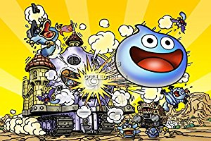

Blue Slime
Usually the first monster you fight in Dragon Quest games!
- Habitat: Surrounding small villages
- Hit Points: 3 to 5
- Disposition: Smiling, but unfriendly
- Able to train: Possible
The Blue Slime is the weakest in the slime family. First appearing in the role playing game Dragon Quest in 1986, these creatures have gained in popularity and have become a mascot for the franchise.